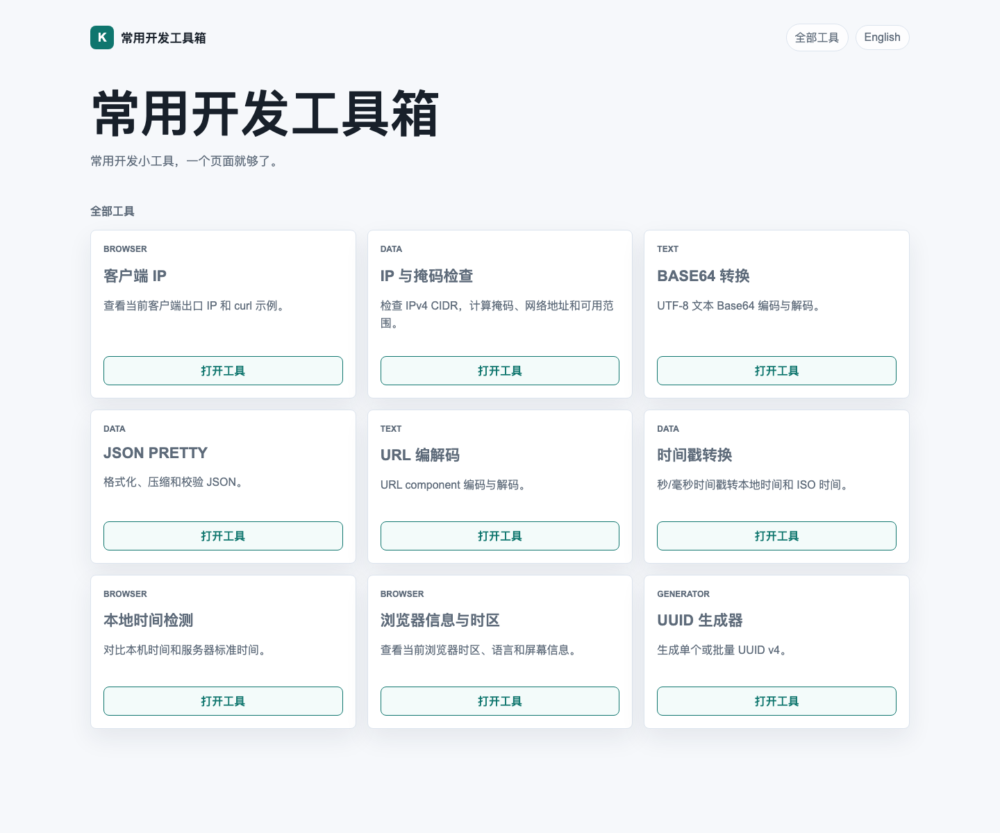

For a while I had one very ordinary problem: during day-to-day debugging, I kept opening the same category of tiny online tools over and over again.
Check my current public IP. Convert a timestamp. Look at browser timezone info. Pretty-print a piece of JSON. None of these tasks are big, but together they somehow turn into a part-time job inside the browser.
So this time I tried a different approach: instead of collecting more bookmarks, I used Codex for a bit of vibe coding and built a small toolbox site that feels nice to use and stays out of the way.
It is live here:
Here is the homepage:

The goal is not to make the biggest toolbox on the internet. It is more like a drawer of utilities that I actually expect to keep using myself. The guiding ideas were pretty simple:
- Put common utilities in one place so I do less tab-hopping.
- Keep things local in the browser whenever that is enough.
- Favor “open and use” over flashy presentation.
Right now the site includes tools like:
- Client IP
- IP & Mask Check
- Base64 Converter
- JSON Pretty
- URL Encoder / Decoder
- Timestamp Converter
- Clock Drift Check
- Browser Info & Timezone
- UUID Generator
A couple of them are especially fun.
The first one is the clock drift checker. It compares your local device time with the server reference time, which is handy for problems that look random at first but are actually time-related, such as login failures, signed-request issues, or certificate oddities.

This is exactly the kind of utility you may not need every day, but when you do need it, it saves you from wandering in circles.
Another one I like is the browser info and timezone page. Whenever someone says “the time looks wrong here” or “the page behaves differently on my side,” checking timezone, language, user agent, and screen details is often a very good first move.

I also tucked Clock drift into that view, so it does not only show what the browser reports, but also how far it appears to be from the server reference time. It is a small detail, but a useful one.
Building this with Codex was also a genuinely pleasant experience. Compared with the more traditional “write a full spec first, then implement everything step by step” rhythm, vibe coding feels more like this:
- explain the idea clearly;
- let Codex build and revise quickly;
- keep iterating until the UI, behavior, and details feel right.
It ends up feeling a bit like pair programming with someone who never gets tired. You keep steering with comments like “this should feel smoother” or “this part needs to be clearer,” and the code keeps catching up.
The site is definitely not a finished monument, and that is part of the appeal. I would rather treat it as a small toolbox that can keep growing whenever I run into another oddly specific but genuinely useful little problem.
If this sounds like your kind of thing, you can bookmark it here:
At the very least, the next time you need to check an IP, convert a timestamp, or confirm whether your local clock has drifted, you will have one less tab to hunt for.